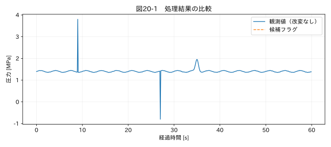

第V部 複数データの統合と品質管理 / 第20章
この章の節
修正履歴とデータの追跡可能性
学習目標
原ファイルから解析結果までの対応を保存し、変更を再現できる記録を作る。ハッシュ、ルール版、実行環境、承認情報の役割を理解する。
20.1 「この点をなぜ変えたか」に答える
半年後、試験結果の再評価でグラフの一部が問題になった。担当者は「ノイズだったので直した」と記憶しているが、元の値、修正場所、根拠が分からない。この状態では、処理の正しさを再確認できない。解析値だけでなく、処理の経路を成果物として残す必要がある。
データリネージは、どの入力からどの変換を通って結果ができたかという由来の連鎖である。本書では原ファイルのハッシュ、ファイル名、シート、元行番号、列名、ルール版、処理前後の値を保存する。元行番号は同じファイル内での位置であり、ファイル内容が変わったら単独では同じ観測を指さない。
CSVのsource_rowはヘッダーを含む論理レコード番号であり、テキストエディター上の物理行番号とは限らない。引用符で囲んだセル内に改行があると、一つのレコードが複数行を占める。CLIは完全空白のレコードも保持し、source_row_kindでlogical_csv_recordとworksheet_rowを区別する。Excelでは元シートの行番号を用いる。
20.2 原本・正規化・解析を分離する
最終アプリの value__raw は読み込んだセルの元の値、value__numeric は型・単位を統一した値、value__analysis は許可された処理後の値である。元のファイル自体は別途保持する。Excelセルの書式や数式までraw列で完全保存できるわけではないため、raw列があることを原本保全の代わりにしない。
value__origin はobserved、missing、invalid_token、interpolatedを区別する。候補フラグは別の表へ出す。候補であることと、値が変わったことは独立である。スパイク候補でもanalysisが元の数値と同じなら、それは検出のみである。
20.3 フラグの設計
一つの点に欠損、時刻異常、飽和などが重なることがあるため、単一の「正常/異常」列だけでは足りない。各理由を真偽列として持てば初心者にも確認しやすい。ビットフラグは省容量だが、ビットの定義と版管理が必須となる。
フラグ名にはcandidateやassessedを明示する。hampel_assessedがFalseの点は、outlier_candidateがFalseでも正常と評価されたわけではない。人の判定結果を追加する場合は、判定状態、担当者、日時、証拠、適用したデータ版を別に記録する。
| 記録項目 | 答える問い |
|---|---|
| source_sha256 | どの内容の入力だったか |
| source_file / sheet / source_row | 元のどこにあったか |
| config_version / config_sha256 | どのルールを使ったか |
| before / after / reason | 何を、なぜ変えたか |
| run_utc / packages | いつ、どの環境で実行したか |
| approved_by | 誰の承認ルールか |
関連する詳細実験は実践補講に掲載。入力形式・同期・補間・校正・多変量・チャンク境界を扱う。
実行するコードと結果
run.py · 共通処理の全ソース
教材フォルダで python examples/chapter20/run.py を実行。以下は省略のないスクリプト。共通モジュールは教材一式に含む。
from pathlib import Path
import sys
ROOT=Path(__file__).resolve().parents[2]
sys.path.insert(0,str(ROOT))
sys.path.insert(0,str(ROOT/'examples'))
import numpy as np
import pandas as pd
from common import load,truth,seconds,plot
from tsclean.core import numeric,timestamps,time_flags,hampel,freeze_candidates,interpolate_short,compare
from tsclean.app import sha256
import json
p=ROOT/'datasets/raw/02_pressure.csv'
print('原本SHA-256:',sha256(p))
df=load('02_pressure');x=df['測定値'];candidate=hampel(x).candidate
ledger=pd.DataFrame({'source_row':np.arange(len(x))+2,'raw':x,'analysis':x,'candidate':candidate,'modified':False})
print(ledger[candidate].head().to_string(index=False))
assert ledger.raw.equals(ledger.analysis)
plot(20,seconds(df),{'観測値（改変なし）':x,'候補フラグ':x.where(candidate)},'圧力 [MPa]')
検証環境での実行結果を開く
原本SHA-256: 8d2cf2fb71b15de1ceb0a041b6a5eed7514ece600c0f90cd117c5d94ce54b6b7
source_row raw analysis candidate modified
92 3.8 3.8 True False
272 -0.8 -0.8 True False

20.4 ハッシュの意味と限界
SHA-256はファイル内容から固定長の値を作り、同じ内容かを確認するのに使う。ファイル名が同じでも内容が変われば通常ハッシュが変わる。しかしハッシュは誰が承認したかを証明する電子署名ではなく、元データが正しいことも証明しない。ハッシュとファイルの両方が書き換えられる環境なら、改ざん防止の保証にもならない。
Excelは保存し直すだけで内部メタデータが変わり、内容の見た目が同じでもバイト列のハッシュが変わることがある。バイト同一性と数値内容の同一性を区別する。正規化後の表について別のハッシュを使うなら、列順、時刻形式、浮動小数点の保存桁、欠損表現の規則を定める。
20.5 再現性とルール変更
同じデータと同じ設定で再実行したとき、解析値とフラグが一致することを確認する。実行日時やExcelの内部時刻は変わるので、出力ファイル全体のバイト一致だけを条件にしない。数値列は必要に応じた許容差、識別子とフラグは完全一致で比較する。
ルール変更では、旧版と新版を同じデータへ適用し、候補数、変更点、評価量の差を一覧にする。閾値を変えて合格に見える結果を作る行為と、検証根拠に基づくルール改善を区別するため、変更理由と承認日を残す。コードはGit、入力データはアクセス管理された保管先など、役割に応じて管理する。
演習
基礎演習
原本ハッシュを計算し、候補点のrawとanalysisが同じことを確認する。
応用演習
CSVをコピーし、一つの値だけ変更してハッシュを再計算する。元ファイルを変更しないこと。
実務演習
同僚から「最新版の設定で過去半年分をやり直して」と依頼された。旧出力と新出力をどう保存し、どう比較するか。
演習解答・解説を表示する
基礎：ハッシュは環境ではなく入力内容に依存する。候補の付与では値は変わらず、図20-1でも原波形が保持される。
応用：コピー側のハッシュが変わる。改変した値と新旧ハッシュを記録すれば、変更を追える。
実務：旧出力を上書きせず、実行ID別のフォルダへ保存する。入力内容の一致、設定差分、フラグの増減、解析値の差、合否への影響を比較し、再採用の根拠を残す。
章末まとめ
追跡可能性は解析結果の一部である。値だけでなく、その由来と判断の記録を残すことで、他の人が検証できる仕事になる。